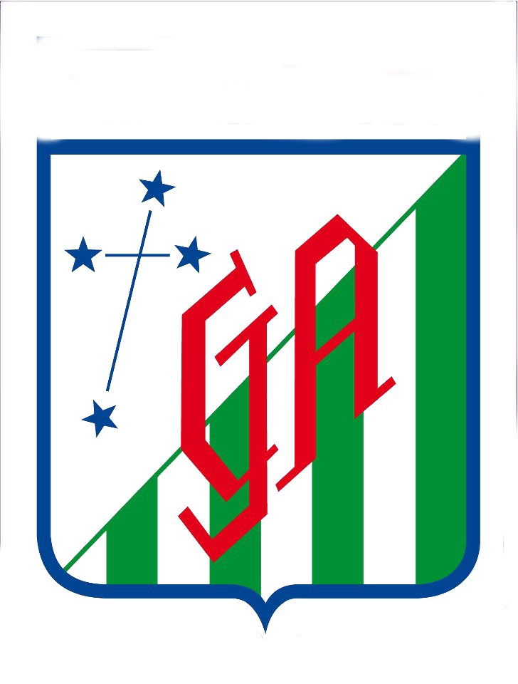

<nav class="navbar fixed-top navbar-expand-lg navbar-dark " style="background-color: #154e2e">
    <div class="container">
  <a class="navbar-brand" href="#">

  </a>
  <button class="navbar-toggler" type="button" data-toggle="collapse" data-target="#navbarSupportedContent" aria-controls="navbarSupportedContent" aria-expanded="false" aria-label="Toggle navigation">
    <span class="navbar-toggler-icon"></span>
  </button>

  <div class="collapse navbar-collapse" id="navbarSupportedContent">
    <ul class="navbar-nav mr-auto" *ngFor="let li of lis">
      <li class="nav-item " routerLinkActive="active">
        <a class="nav-link" [routerLink]="[li.routerLink]">{{li.name}}</a>
      </li>
    </ul>
  </div>
  </div>
</nav>